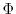

The main purpose of this command is to compare spatial features of the atom selection with the selected restraints in order to determine the violations of the molecular pdf. It lists variable amounts of information about the values of the basis, feature, and molecular pdf's for the current MODEL. All arguments that affect the value of the molecular pdf are also relevant for the selection.energy() command.
The scaling factors for the physical restraint types are given by schedule_scale. This allows easy reporting of only a selected subset of all restraints.
Most of the output goes to the log file. The output of the selection.energy() command has to be examined carefully, at least at the end of the optimization, when the final model is produced. Additional output files, for the ASGL plotting program are created if asgl_output = True (undocumented).
output selects various kinds of output information:
viol_report_cut is a vector with one real number for each physical restraint type. A restraint is reported when its `heavy relative violation' (see Section 5.3.1) is larger than the corresponding cutoff.
viol_report_cut2 is similar to viol_report_cut, except that it contains cutoffs for restraint `energies', not heavy relative violations.
The meaning of various other reported properties of the violated restraints is briefly described in the log file. For interpreting the seriousness of violations, use the following rule of thumb: There should be at most a few small violations (e.g., 4 standard deviations) for all monomodal restraints. In comparative modeling, the monomodal restraints include the stereochemical restraints and distance restraints when only one homologous structure is used. For the multimodal restraints, there are usually many violations reported because the heaviest violations are used in deciding whether or not to report a violation. In comparative modeling, the multimodal restraints include therestraints, ( ,
) binormal restraints and distance restraints when more than one template is used. See also Section 3.1, Question 13.
For profiles:
This command calculates residue energies or heavy relative violations, depending on output, for all physical restraint types (see Table 6.1). Relative heavy violations (see Section 5.3.1) are used because only relative violations of different features are comparable. In both cases, the residue sum is the sum over all restraints that have at least one atom in a given residue. The contribution of each restraint is counted exactly once for each residue, without any weighting. Restraints spanning more than one residue contribute equally to all of them. Thus, the sum of residue energies is generally larger than molecular pdf. The command also calculates the sum over all physical restraint types of the contributions for each residue and then writes all the contributions, plus this sum, as columns in a a file suitable for plotting by a plotting program such as ASGL or GNUPLOT.
If normalize_profile is True the profile for each residue is normalized by the number of terms applying to each residue.
All the curves are smoothed by the running window averaging method if smoothing_window is larger than 0: The window is centered on residueand extends for (smoothing_window/2) - 1 residues on each side. Thus, smoothing_window has to be an even number (or it is made such by the program automatically). The only exceptions are the two termini, where a smaller number of residues are available for smoothing. The relative weight of residue
when calculating the smoothed value at residue
The energy or the violations profile (sum over all restraint types) is also written to the Bfield of the model (the temperature factor for PDB X-ray structures). Note that all the atoms in one residue get the same number. This output is useful for exploring the violations on a graphics terminal.
This function returns the total value of the objective function, molpdf, and the contributions from each physical restraint type, terms.
# Example for: selection.energy()
# This will calculate the stereochemical energy (bonds,
# angles, dihedrals, impropers) for a given model.
from modeller import *
from modeller.scripts import complete_pdb
env = environ()
env.io.atom_files_directory = ['../atom_files']
env.libs.topology.read(file='$(LIB)/top_heav.lib')
env.libs.parameters.read(file='$(LIB)/par.lib')
def patch_disulfides(mdl):
# Must patch disulfides here to calculate the non-bonded
# energy properly. Also, when you use hydrogens, disulfides
# must always be patched so that sulfhydril hydrogens are
# removed from the model.
for ids in [ ('17', '39'),
( '3', '22'),
('53', '59'),
('41', '52') ]:
mdl.patch(residue_type='DISU', residues=[mdl.residues[r] for r in ids])
mdl = complete_pdb(env, "1fas", patch_disulfides)
# Select all atoms
atmsel = selection(mdl)
mdl.restraints.make(atmsel, restraint_type='stereo', spline_on_site=False)
# Actually calculate the energy
(molpdf, terms) = atmsel.energy(edat=energy_data(dynamic_sphere=True))
# molpdf is the total 'energy', and terms contains the contributions from
# each physical type. Here we print out the bond length contribution:
print "Bond energy is %.3f" % terms[physical.bond]